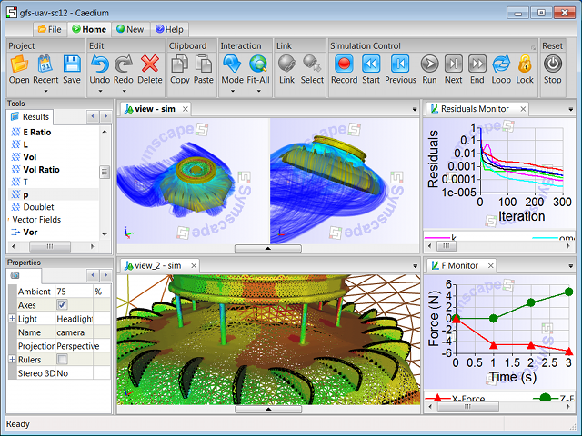

Caedium
Caedium (formerly SymLab) and its add-ons combine to form an easy-to-use Computational Fluid Dynamics (CFD) software system to help you assess the performance of your 3D models.
Using Caedium add-ons you can create any 2D or 3D geometry or import your geometry from another CAD package. Then simulate how a gas (e.g. air) or liquid (e.g. water) will flow over and through your geometry. For details check out our Caedium Product Comparison chart.
Whether your favorite operating system is Windows or Mac OS X, Caedium has you covered with its unique native cross-platform architecture.
To realize Caedium's full geometry creation and simulation capabilities, i.e., to generate sym files for your own designs, you will need to expand the free download with one or more of the following add-ons:
- Professional: obtain all of the Caedium add-ons (listed below) in a single discounted package
- RANS Flow: use state-of-the-art RANS CFD to simulate realistic (viscous) gas or liquid flow with heat transfer around and through your design to determine flow directions and forces (e.g., lift and drag)
- Panel Flow: use a panel method to simulate idealized (inviscid) gas or liquid flow around streamlined shapes and through simple ducts to determine flow directions and forces
- Builder: create and modify your own 2D and 3D geometry designs
- Transient: explore time-dependent simulations and visualization of results
- Exchange: import and export IGES, STEP and faceted file formats
- Viz Export: export your 3D results to high resolution, high quality renderers and other visualization packages
These add-ons are available on a subscription basis. Try before you buy with our no hassle free 30-day add-on trials.
Caedium is simple to learn and efficient to use. You can study how the physics of your model changes over time or as you modify your model in real time. Caedium's unified simulation environment makes it easy to change your model on the fly and quickly see the results of your changes.
Examples of models you can analyze with Caedium:
- Airflow over an aircraft
- Water flow around a submarine
- Airflow over a moving car
- Water flow through pipes
You can download the basic version of Caedium (without any add-ons) for free! This free download functions as a viewer for Caedium files and allows you to get a feel for Caedium's easy-to-use interface and capabilities. It is ideal for interactive viewing and sharing of sym and brep 3D models files.
You can download and view our sample sym files for free!
Add-ons used to create sym files are not needed to view them. All add-ons require a Caedium installation.
UAV CFD Simulation
Evaluate and compare engineering concept designs
- View and compare results from multiple simulations
- Create multiple 3D views of the same simulation
- Use multiple camera views to examine your results from different angles
- Generate 2D plots and compare imported data with your simulation results
- Drag and drop windows to group and view them simultaneously
Share results
- Print out your results
- Export images in standard formats (png, jpg, bmp, xpm, pnm, tif)
- Import/export plot data as Comma Separated Values (CSV)
- Save results in the native sym file format for interactive exploration in the free Caedium viewer
- Import background images to add life to a scene
- Texture map images onto geometry surfaces – add a decal to a car or a company logo to your product
Simple to learn
- Intuitive ribbon-like tabbed toolbars
- Full undo/redo capabilities
- Multilingual localization for:
- English
- French
- German
- Italian
- Japanese
- Portuguese (Brazil)
- Spanish
Efficient to use
- Context sensitive Drag'n'Drop tools
- Interactive selection of geometry in the View Window
- Positive sound feedback – Caedium incorporates sounds to accompany many actions you take during your simulation setup and results analysis
- Live property values rather than dialogs – change properties on the fly without being faced with annoying popup dialogs
- Use selection filters to easily select geometry based on a wide range of constraints
Easy, geometry-based simulation setup
Note these features are only available when you have a simulation add-on activated, such as Caedium RANS Flow.
- Intuitive, geometry-based physics specifications, via Drag'n'Drop
- Domain rather than solution technique terminology
- Pipeline Driven Technology to automate and simplify upstream simulation prerequisites such as meshing
- Automated meshing
- Intuitive, geometry-based accuracy control where geometry can influence unconnected simluation geometry
- New derived variables can be created via Drag'n'Drop
Explore geometry-based simulation results
- Display 3D line, surface and volume contours
- Generate vectors represented by scaled arrows
- View streamlines represented by lines, ribbons, tubes, surfaces or a wide variety of particle glyphs (e.g., arrows)
- Combine vectors, streamlines and contours in single views
- Monitor the progress of your simulation using monitor plots
- Display 3D stereoscopic images, with support for color anaglyphs using red-cyan glasses
Easy activation and updates
- Access integrated, online add-on activation and updates via the Caedium->Help menu.
Caedium Testimonial
"I found it [Caedium] to be extremely useful and easy to use."
— Fernando Freitas